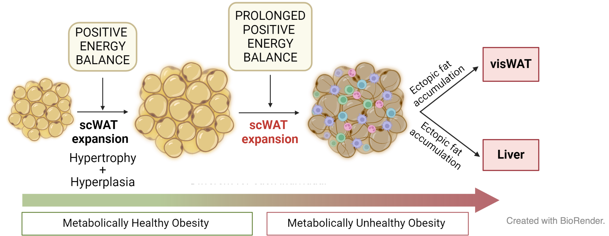
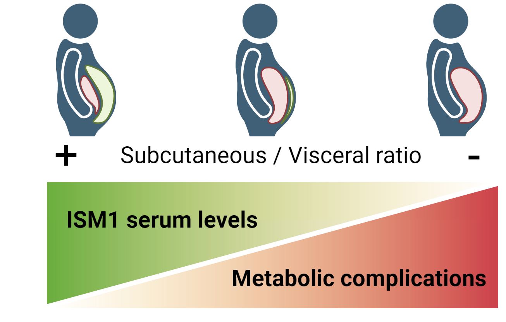

Current Projects
The Fat expandibility (FATe)
We investigate the expandability limits of subcutaneous adipose tissue and their role in ectopic lipid deposition — particularly in the liver (MASLD). At the core of this line is the FATe cohort, over 500 individuals with obesity recruited since 2013, providing biological samples, multi-omics data, and longitudinal clinical follow-up.

Read more
Obesity, characterized by excessive fat accumulation, poses health risks. Subcutaneous adipose tissue can expand during positive energy balance, but once its expansion capacity is exceeded, ectopic lipid deposition occurs in other organs. One prevalent comorbidity of obesity is intrahepatic lipid accumulation, as seen in metabolic dysfunction-associated steatotic liver disease (MASLD, formerly NAFLD).
This project builds on the group’s primary research, initiated under the FATe Project, which studied adipose tissue expandability and aimed to identify non-invasive biomarkers for expansion limits and obesity-related complications. The initial study identified factors limiting subcutaneous adipose tissue expansion and stratified obese patients using biomarker-based predictive models (FASEB. 2022). Mesenchymal stem cell lines from diverse phenotypes were characterized.
Then, the team focused on using CRISPR/Cas9 gene-editing technology to modify mesenchymal stem cells from adipose tissue, enhancing their functionality and differentiation into adipocytes with increased expansion capacity. Our results suggested that improving adipocyte expandability could reduce intrahepatic fat accumulation and offer therapeutic potential for NAFLD (Am J Physiol Cell Physiol. 2023).
Moreover, given the limitations of traditional metrics like BMI and waist circumference in assessing obesity-related risks, we demonstrated that the SC/VIS fat ratio is a more effective metric for distinguishing metabolic health profiles. We identified ISM1 as a promising non-invasive biomarker, showing strong correlations with fat distribution, serum adipokines, and glucose regulation, highlighting its potential for improved obesity risk assessment (Cardiovascular Diabetol. 2023).

We mantain a continuously expanding cohort with over 500 individuals with obesity recruited since 2013 as part of the FATe Project. Participants undergo comprehensive characterization and have donated adipose tissue (subcutaneous and visceral), DNA, blood, and liver biopsies. Mesenchymal stem cells from the adipose tissue have been used to establish cell cultures. Omics techniques, including bulk and single-nuclei RNA sequencing, miRNA analysis, and exome sequencing, have been applied to selected subgroups. This cohort actively supports the group’s research projects and would be available for national and international collaborations.
New biomarkers for MASLD and hepatocellular carcinoma (HCC)
Two ISCIII-funded projects (PMP21/00094 and PI22/01366) develop non-invasive transcriptomic biomarkers to stage MASLD progression and identify patients at high risk of hepatocellular carcinoma, combining RNA-seq with machine learning and AI-driven computational approaches.
Read more
Metabolic dysfunction-associated steatotic liver disease (MASLD), a widespread condition, encompasses a spectrum from simple steatosis (“fatty liver”) to steatohepatitis (SH). SH can escalate into non-alcoholic steatohepatitis (MASH), which may further progress to advanced fibrosis (cirrhosis), hepatocellular carcinoma (HCC), and liver failure. The prevalence of MASLD is expected to rise due to the global obesity epidemic driven by sedentary lifestyles and poor dietary habits.
Liver biopsy is the gold standard for evaluating MASLD stages but has significant limitations. It carries risks of complications, sampling variability, and limited representativeness due to the small tissue area analyzed. Moreover, it is unsuitable for long-term dynamic monitoring of fibrosis. Consequently, developing reliable non-invasive methods to stage MASLD is critical for tracking disease progression and guiding therapy. While various non-invasive models combining clinical and routine lab analytes have been proposed, their diagnostic value remains controversial.
Over recent years, gene expression profiling of human cells and tissues has advanced the understanding of molecular mechanisms and potential predictive biomarkers for metabolic diseases such as obesity and diabetes. While several studies have sought genetic profiles to differentiate MASLD stages, hepatic transcriptomic biomarkers specific to detecting MASH and predicting its progression remain untested in clinical practice. Limitations include small sample sizes, lack of replication cohorts, insufficient focus on transcriptional differences between steatosis and advanced fibrosis, and challenges in translating candidate genes into standard clinical assays.
Our team is engaged in two national projects funded by the Instituto de Salud Carlos III: a consortium in the personalized medicine framework (PMP21/00094) and a single-center initiative (PI22/01366). These aim to develop innovative methodologies combining gene expression analyses with advanced statistical techniques to create non-invasive biomarkers for tracking MASLD progression and identifying patients at high risk for HCC. These efforts focus on:
- Enhancing understanding of the molecular mechanisms underlying liver diseases.
- Proposing new therapeutic targets for drug development.
- Identifying transcriptional patterns specific to fibrosis, shedding light on the molecular drivers of inflammation and prefibrotic states.
We will integrate transcriptomic data with established predictors (e.g., FIB-4, APRI, NFS) and advanced computational methods, including AI, to refine biomarker discovery. Particular attention will be given to genes encoding secreted proteins, aiming to create accessible and scalable diagnostic tools for early detection and therapeutic interventions.
This approach seeks to bridge current gaps in MASLD management, facilitating early diagnosis, risk stratification, and improved clinical outcomes for patients at risk of progressing to HCC.
Hypoxia and liver fibrosis: unlocking MASLD progression through multi-omics and AI
ISCIII project PI25/02003 investigates how obstructive sleep apnea-driven intermittent hypoxia accelerates MASLD progression to advanced fibrosis. Two prospective cohorts are studied with spatial transcriptomics, single-nucleus RNA-seq, and exosomal miRNA profiling to map hypoxia-driven fibrotic niches and discover circulating biomarkers.
Read more
Obstructive sleep apnea (OSA) causes recurrent episodes of intermittent hypoxia that may act as an independent driver of liver injury. Existing evidence — including preliminary data from our FATe cohort — indicates that OSA is associated with greater hepatic steatosis and more advanced fibrosis regardless of obesity. Despite this, OSA and MASLD are routinely managed in separate clinical settings, and the molecular mechanisms linking intermittent hypoxia to fibrosis progression remain poorly defined.
This project investigates how chronic intermittent hypoxia shapes the molecular and cellular landscape of MASLD using a combined clinical and experimental approach. We study two prospective cohorts recruited at the Hospital Universitario Miguel Servet: a bariatric surgery cohort (n=30) providing biopsy-proven liver and adipose tissue samples, and an OSA cohort (n=100) spanning a wide BMI range and evaluated with polysomnography and FibroScan at baseline and 12-month follow-up.
To map hypoxia-induced changes at single-cell and spatial resolution, we integrate bulk RNA-seq, single-nucleus RNA-seq (snRNA-seq), and spatial transcriptomics (10x Genomics Visium HD) on liver and adipose biopsies. A key focus is lipid-associated macrophages (LAMs / Trem2+), a macrophage subset that accumulates in fatty liver and adipose tissue and whose balance between lipid buffering and fibrogenic activity may be critically modulated by hypoxia. Protein-level validation of candidate targets is performed with the MACSima multiplexed imaging system.
In parallel, we profile exosomal miRNAs from circulating blood as minimally invasive biomarkers of hypoxia-driven disease activity. Functional studies in lipid-loaded hepatocyte–macrophage co-cultures under intermittent hypoxia cycles directly test the mechanistic role of candidate miRNAs and cholesterol biosynthesis pathways — a signature we identified in OSA patients by RNA-seq.
AI-driven bioinformatics, including large language models, complements traditional pipelines to integrate high-dimensional multi-omics data, annotate cell–cell communication networks, and generate predictive models for fibrosis progression. A sex-balanced study design and systematic sex-stratified analyses are embedded throughout.
The expected outcomes include a spatial atlas of hypoxia-driven fibrotic niches in MASLD liver, a circulating exosomal miRNA signature for OSA-aggravated disease, and a clinical screening algorithm suitable for integration into national hepatology and respiratory guidelines (AEEH, SEPAR).